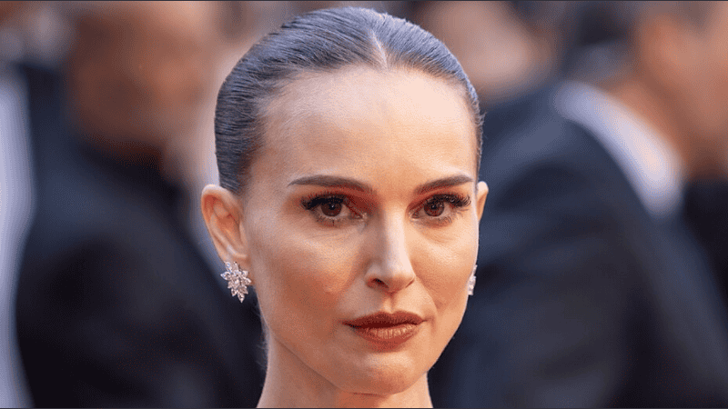

La actriz Natalie Portman anunció que está embarazada de su tercer hijo. A sus 44 años, confirmó la noticia en una entrevista con Harper’s Bazaar, donde expresó su felicidad por esta nueva etapa junto a su pareja, el músico francés Tanguy Destable.
"Estamos muy felices. Me siento profundamente agradecida. Sé que es un privilegio y un milagro", señaló la protagonista de Thor: Love and Thunder.
Este será el primer hijo que tendrá con Destable y el tercero en su vida. La actriz ya es madre de Aleph, de 14 años, y Amalia, de 9, fruto de su relación con el coreógrafo Benjamin Millepied, con quien estuvo casada durante más de diez años hasta su separación en 2024.
Portman también compartió su mirada sobre este embarazo en una etapa más avanzada de su vida.
Reconoció las dificultades que muchas personas enfrentan para concebir y explicó que por eso atraviesa este momento con un fuerte sentimiento de gratitud. Además, mencionó que su cercanía con el ámbito de la medicina reproductiva, a través de su entorno familiar, le permitió mayor conciencia sobre esta realidad.
Actualmente radicada en París, contó que se siente con más vitalidad de la que imaginaba y que está disfrutando plenamente este proceso.
A lo largo de su carrera, la actriz optó por mantener a sus hijos alejados de la exposición pública, una decisión que continúa sosteniendo.